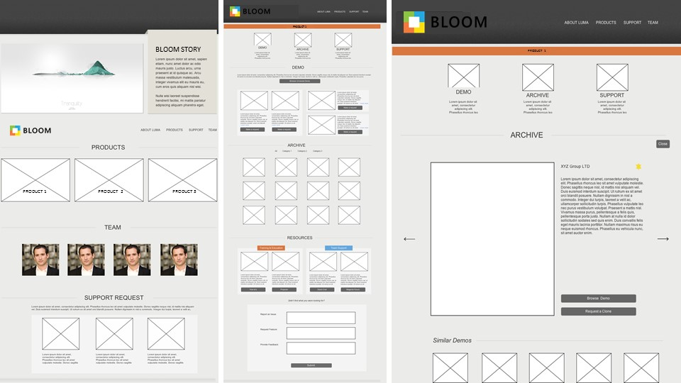

User Experience Intern @eBay.inc
I interned at Ebay Enterprise over the Summer of 2015. The goal of this 11 week exercise was to follow the "Customer Driven Innovation" process to better understand the sales demo ecosystem, pinpoint major flaws in the process and redesign the current request-delivery pipeline for efficiency and automation.
My work revolved around designing the knowlegde portal/platform for the internal teams to request and seek support for the different flavors of the demo instances. I followed the design philosophy of "Customer Driven Innovation" used across ebay products. My work included understanding the sales process specifically the demo ecosystem by conducting stakeholder interviews across different teams, analysing them and designing a web based portal based on the prevalent sales process. I also designing an infographic to be used a knowledge tool for understanding various flavors and features of sales demo.
*Actual Brands have been replaced with fictious brands.
Customer Driven Innovation - The Process
Customer Driven Innovation (CDI) is a repeatable method for creating great ideas and products. It is based on a rigorous understanding of your customers and their needs. Developed from the principles of Design Thinking by the Stanford d.School, similar variations are in use at companies across the world, such as PayPal, eBay, Google, IDEO, Lego, and many more.


Stakeholder Interviews and Problem Identification
The goal of the stakeholder-user study was to understand the broader sales cycle, capture the pain points around current demo request and delivery processes, and gauge requirements for the upcoming demo. Semi-structured interviews were conducted with 18 stakeholders involved at various stages of the sales process (Solutions Consultant, Sales Managers, Channel Development Managers, Project Managers). Each interview session lasted for approx. 30 minutes during which there were questions around their prevalent processes, their challenges and pain points and their perceptions and aspirations for the newer product version and the corresponding version of the sales demo. Interviews were conducted over phone which were recorded and analyzed.

Insights from Affinity Analysis
There was no defined processes around request-delivery of sales demo or prospect 2-week trial. No defined support processes around the sales demo were present. Members of the Solutions Innovation team were called directly for assistance. There was a lack of training and knowledge material. Configuring the demo was a time-intensive task and involved a slight learning curve. There was a Lack of peer-to-peer discussion and support and no visibility into previously customized demos (history). Other insights on desirable features for the new demo version and pain points were gained.
- Sales Demo Processes
Defining a process to request and deliver a demo instance and establish a feedback-error loop for effective communication, Creating an active repository for browsing customized demos and Establishing an active community/forum for tips, tools and bug fixesLeverage current practice (Email, Trello, Slack, Salesforce) - 2-Week trial demo
Defining a consistent process to request and deliver the 2 week trial to prospects and monitor the trial lifespan for extension requirements. - Documentaion and Training
Developing an effective self service or self help platform to quickly review knowledge content around available sales demoes.
Customer Journey, Personas and Scenarios
Based on the feedback received from the stakeholders, customer journey was drafted to understand major touch points, pain points and overall sales process. Also, perosnas were drafted based on different users that interact with the demo-


Requirements Indentification
Based on the analysis of the interviews, user journey, persona etc. requirements for the system and processes were populated.
Ideation and Conceptualisation
Based on the insights from the previous steps and requirements chart, two ideas were taken forward one for immediate setup and one as a long term solution:- Long term: User and Admin Dashboard to facilitate active feedback loop
- Short Term: A Minimum viable website based-solution to gather input from the users and act as a one-stop portal for both demo requests and support.


Wireframes and Prototype
The concept of Long Term dasboard was prototyped with mid-fidelity and an interactive prototype was generated. For the website based minimum viable product, high-fidelity prototype was published in HTML/CSS.

Infographic
The goal was to create visual content which could help the audience to understand specific features inside different available stores [PLUM, BERRY] of the fictious BLOOM brand better and enable them to appreciate different types of sales strategies available for different user groups (Sales team, prospects and partners).Thus, The aim was to design something which was not only aesthetically pleasing but also able to clearly convey the ideas. The challenge was to organize linear and hierarchical content together in the most effective and efficient way.

Learning and Takeaways
The intern with the "Solutions Innovation" team at Ebay Enterprise exposed me to various process involved in a typical sales cycle and help me understand the importance of Expereince design not only for customer facing product but also in the core process of the internal teams themselves. A better process can help boost the speed of work and increase efficiency. This effect umtimately trickles down to the customers and partners. Overall, this was a great opportunity for me to work with an amazing team and learn and contribute towards a differnt side of business processes.